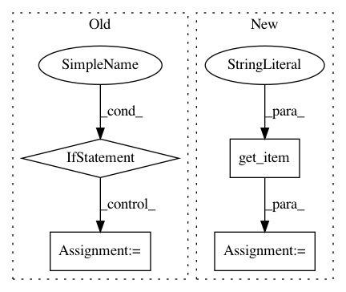

cfb16dc6d2529a8f1ad664968715c1b9756e7f25,hyperspy/misc/date_time_tools.py,,get_date_time_from_metadata,#Any#Any#,28
Before Change
time = metadata.get_item("General.time")
if date and time:
dt = parser.parse("%sT%s" % (date, time))
if "time_zone" in metadata["General"]:
try:
time_zone = pytz.timezone(metadata["General"]["time_zone"])
dt = time_zone.localize(dt)
except pytz.UnknownTimeZoneError:
time_zone_offset = pytz.FixedOffset(
metadata["General"]["time_zone"])
dt = parser.parse("%sT%s%s" % (date, time, time_zone_offset))
elif not date and time:
dt = parser.parse("%s" % time).time()
elif date and not time:
dt = parser.parse("%s" % date).date()
After Change
if date and time:
dt = parser.parse("%sT%s" % (date, time))
if metadata.has_item("General.time_zone"):
dt = dt.replace(tzinfo=tz.gettz(metadata.get_item("General.time_zone")))
elif not date and time:
dt = parser.parse("%s" % time).time()
elif date and not time:
In pattern: SUPERPATTERN
Frequency: 3
Non-data size: 4
Instances
Project Name: hyperspy/hyperspy
Commit Name: cfb16dc6d2529a8f1ad664968715c1b9756e7f25
Time: 2017-01-11
Author: vidartf@gmail.com
File Name: hyperspy/misc/date_time_tools.py
Class Name:
Method Name: get_date_time_from_metadata
Project Name: hyperspy/hyperspy
Commit Name: 7c78219751969a19a7277d64d0ef8664dc7f3461
Time: 2018-07-12
Author: eric.prestat@gmail.com
File Name: hyperspy/_signals/complex_signal.py
Class Name: ComplexSignal_mixin
Method Name: plot
Project Name: hyperspy/hyperspy
Commit Name: 92d1d1ceebd71f6307f6e3afa3111c9cf00f0f64
Time: 2020-08-21
Author: tjof2@cam.ac.uk
File Name: hyperspy/_signals/eds.py
Class Name: EDS_mixin
Method Name: get_take_off_angle